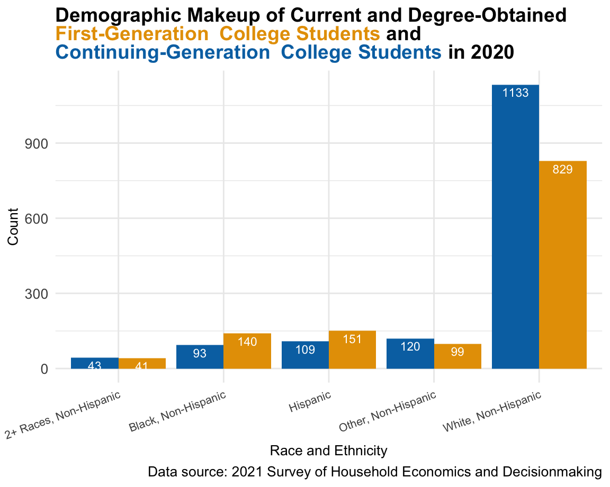
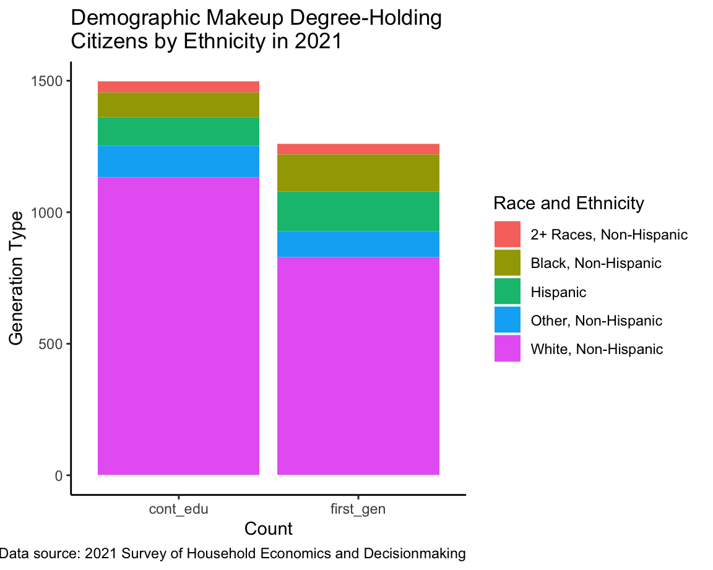
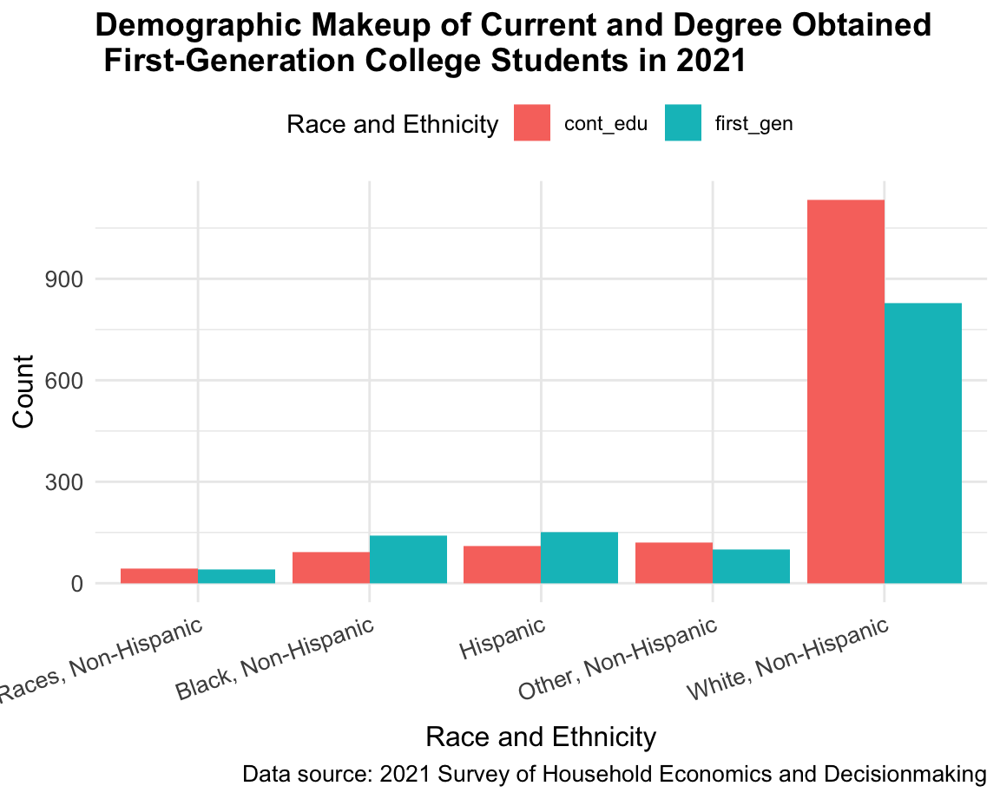
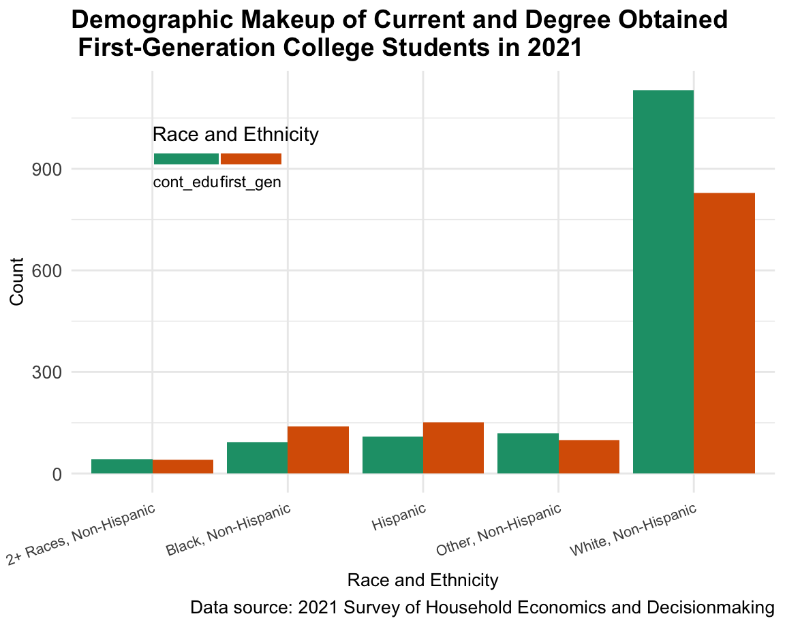
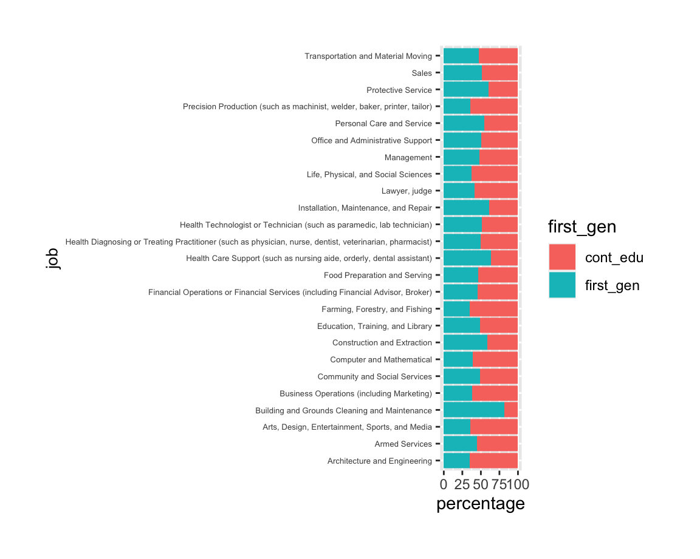
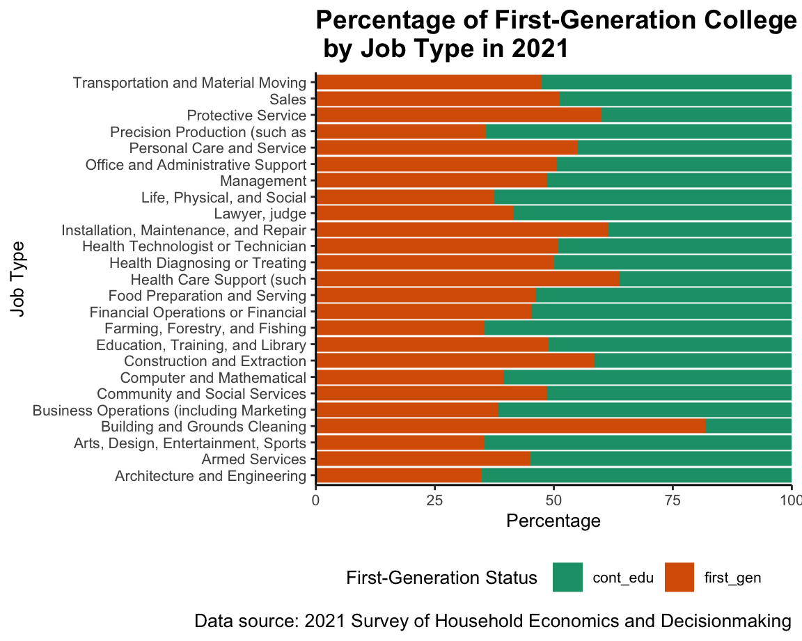
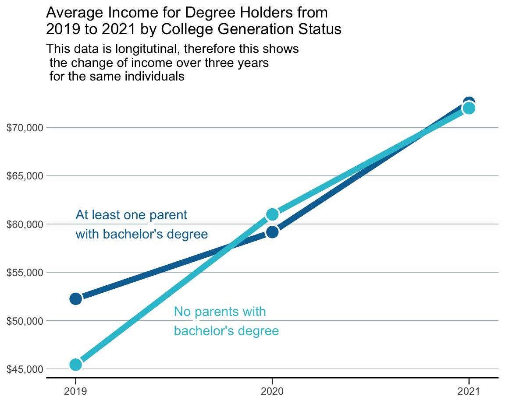
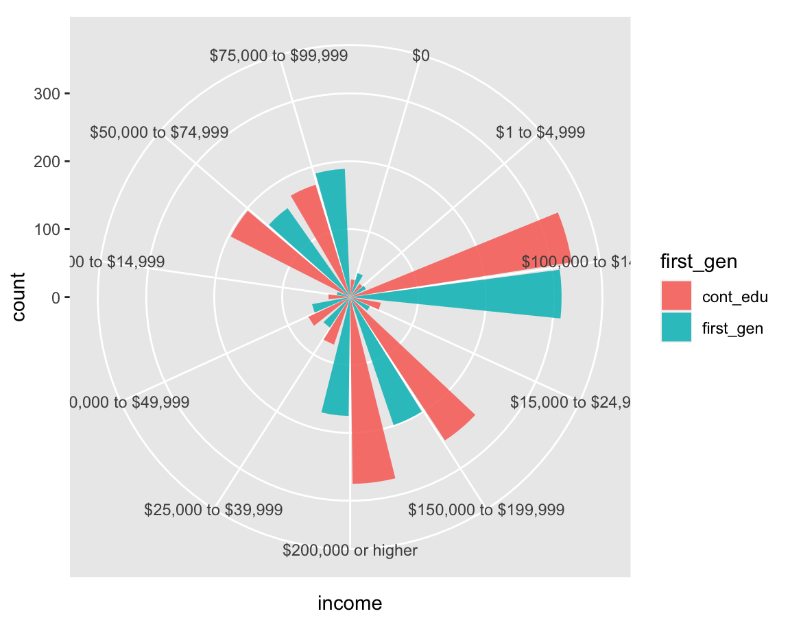
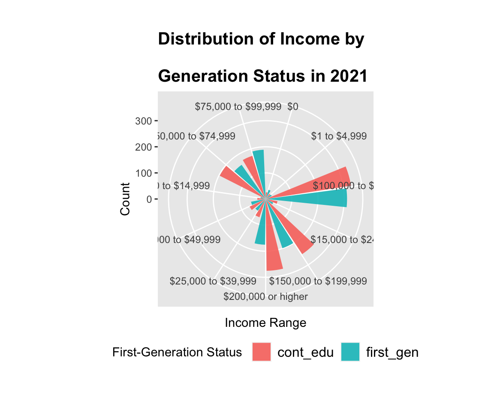

KEY VARIABLES OF INTEREST:
Ethnicity
[]
Occupation
[]
Income
[]

My final plot takes the legend out complately and uses the title to detail the legend. I also placed the numbers for each group inside the bars to improve readability.

Here is my first shot at graphing this data to ask my question, “is there a difference in the ethnic makeup of first generation college students compared to continuing education college student in 2021?” This graph answers that question in a way, but it isn’t the most intuitive graph when glancing at it.

Here is my second shot. At a glance, we can see that this graph is easier to read and understand the numbers for each ethnicity. When the bars are stacked on top of each other, the viewer is forced to do the math themselves. Dodging the bars does the work for the reader by having a clear measurement for each group.
 > On my third attempt, I wanted to improve the graph by making it colorblind-friendly and condensing the infromation of the graph by placing the legend inside of the graph rather than to the side.
I made the graph interactive, so as the viewer hovers, the exact percentage for each group appears. I also added a line at the 50 percent mark to create a weight to compare the bars to. Side note: I attempted to use reorder()to organize the graph from least to greatest percentage for first_gen but nothing was working.

This graph is intended to answer the question, “After college, what jobs are first-generation college students taking, and is this different compared to continuing education college students?” At a glance, we can see there are a few noticable differences, such as first-generation college students take more maintanance, health care, and construction jobs and continuing-education college students are more likely to hae engineering, social science, media, and precision production jobs.

To update the previous graph, I changed the palette to colorblind-friendly colors, shortened the job titles, and added titles.

Moving away from the circle plot, I decided to challange myself with a longitutinal data set and calculating the average income across time for each group. The original data set had the income responses in ranges, therefore I had tackle a good amount of data wrangling to calculate the average income by group, however, I believe this graph is better equipped to compare the income of first-generation college students to continuing-education college students while also looking at this over time. The graph shows that while in 2019 first-generation college students make less than continuing-education college students, a small, but consistent shift happens where first-generation college students actually start making a little more than their counterpart.

The goal of this graph was intended compare the income of first-generation college students to continuing-education college students. I wanted to test a circular bar graph to answer this question, however as we can see, it isn’t very intuitive or aesthetically pleasing.

I attempted to improve the circular graph with titles and clearer ranges, but it looks a bit worse so I decided I would scratch the circle plot and go with another idea to answer my question.
---
title: "First Generation College Students - After College "
output:
flexdashboard::flex_dashboard:
orientation: columns
vertical_layout: fill
social: menu
source_code: embed
favicon: data_viz_icon.png
---
```{r setup, include=FALSE}
library(flexdashboard)
#https://github.com/dfaragon/EDLD_622_final.git
# Package names
packages <- c("ggplot2",# for plots
"here", # to set directory for where this file lives
"dplyr", # for data wrangling
"tidyr", # for data wrangling
"rio", #to set directory
"knitr",# for rmarkdown
"lubridate", # to place dates
"flexdashboard", # for dashboard online
"readr", # to read csv files
"data.table", # create data tables
"fontawesome", # for icons on website
"plotly", # for interactive plots
"tidyverse", # for data wrangling
"grid", # to set grids of ggplot
"ggnewscale", # to set text on ggplot
"ggtext", # to set text on ggplot
"shadowtext",# to set text on ggplot
"patchwork",# to set text on ggplot
"scales") # for dollar_format
# Install packages not yet installed
installed_packages <- packages %in% rownames(installed.packages())
if (any(installed_packages == FALSE)) {
install.packages(packages[!installed_packages])
}
# Packages loading
invisible(lapply(packages, library, character.only = TRUE))
#import raw data
raw_df <- read_csv("/Users/denicia/Documents/dashboard/docs/public2021.csv")
raw_df2020 <- read_csv("/Users/denicia/Documents/dashboard/docs/public2020.csv")
raw_df2019 <- read_csv("/Users/denicia/Documents/dashboard/docs/public2019.csv")
# select specific variables needed
df <- raw_df %>%
select(c("CaseID", "ED0", "CH2", "CH3", "ppagecat", "ppethm", "ppracem", "ppcm0160", "I40", "D1G", "ED0B")) %>%
rename("id" = "CaseID",
"edu" = "ED0",
"mother_edu" = "CH2",
"father_edu" = "CH3",
"income" = "I40",
"age" = "ppagecat",
"race_hisp" = "ppethm",
"job" = "ppcm0160",
# "race_alone" = "ppracem",
# "hisp_alone" = "pphispan",
"current_student" = "ED0B",
"current_student_type" = "D1G")
df1 <- raw_df %>%
select(c("CaseID", "ED0", "CH2", "CH3", "ppagecat", "ppethm", "ppracem", "ppcm0160", "I40", "D1G", "ED0B")) %>%
rename("id" = "CaseID",
"edu_21" = "ED0",
"mother_edu_21" = "CH2",
"father_edu_21" = "CH3",
"income_21" = "I40",
"age_21" = "ppagecat",
"race_hisp_21" = "ppethm",
"job_21" = "ppcm0160",
# "race_alone" = "ppracem",
# "hisp_alone" = "pphispan",
"current_student_21" = "ED0B",
"current_student_type_21" = "D1G")
df2 <- raw_df2020 %>%
select(c("CaseID", "ED0", "CH2", "CH3", "ppagecat", "ppethm", "ppracem", "ppcm0160", "I40", "D1G", "ED0B")) %>%
rename("id" = "CaseID",
"edu_20" = "ED0",
"mother_edu_20" = "CH2",
"father_edu_20" = "CH3",
"income_20" = "I40",
"age_20" = "ppagecat",
"race_hisp_20" = "ppethm",
"job_20" = "ppcm0160",
# "race_alone" = "ppracem",
#"hisp_alone" = "pphispan",
"current_student_20" = "ED0B",
"current_student_type_20" = "D1G")
df3 <- raw_df2019 %>%
select(c("CaseID", "ED0", "CH2", "CH3", "ppagecat", "ppethm", "ppracem", "ppcm0160", "I40", "D1G", "ED0B")) %>%
rename("id" = "CaseID",
"edu_19" = "ED0",
"mother_edu_19" = "CH2",
"father_edu_19" = "CH3",
"income_19" = "I40",
"age_19" = "ppagecat",
"race_hisp_19" = "ppethm",
"job_19" = "ppcm0160",
# "race_alone" = "ppracem",
# "hisp_alone" = "pphispan",
"current_student_19" = "ED0B",
"current_student_type_19" = "D1G")
```
```{r}
# THIS WORRKKKED
library(readr)
# Identify encoding of the column
column_encoding <- guess_encoding(df2$father_edu_20)$encoding[1]
column_encoding1 <- guess_encoding(df2$edu_20)$encoding[1]
column_encoding2 <- guess_encoding(df2$mother_edu_20)$encoding[1]
#column_encoding6 <- guess_encoding(df2$current_student_20)$encoding[1]
# Convert the column to UTF-8 encoding
df2$father_edu_20 <- iconv(df2$father_edu_20, from = column_encoding, to = "UTF-8", sub = "")
df2$edu_20 <- iconv(df2$edu_20, from = column_encoding1, to = "UTF-8", sub = "")
df2$mother_edu_20 <- iconv(df2$mother_edu_20, from = column_encoding2, to = "UTF-8", sub = "")
#df2$current_student_20 <- iconv(df2$current_student_20, from = column_encoding6, to = "UTF-8", sub = "")
# Remove single quotes from the column
df2$father_edu_20 <- gsub("'", "", df2$father_edu_20)
df2$edu_20 <- gsub("'", "", df2$edu_20)
df2$mother_edu_20 <- gsub("'", "", df2$mother_edu_20)
#df2$current_student_20 <- gsub("'", "", df2$current_student_20)
```
```{r}
# Identify encoding of the column
column_encoding3 <- guess_encoding(df3$father_edu_19)$encoding[1]
column_encoding4 <- guess_encoding(df3$edu_19)$encoding[1]
column_encoding5 <- guess_encoding(df3$mother_edu_19)$encoding[1]
# Convert the column to UTF-8 encoding
df3$father_edu_19 <- iconv(df3$father_edu_19, from = column_encoding3, to = "UTF-8", sub = "")
df3$edu_19 <- iconv(df3$father_edu_19, from = column_encoding4, to = "UTF-8", sub = "")
df3$mother_edu_19 <- iconv(df3$mother_edu_19, from = column_encoding5, to = "UTF-8", sub = "")
# Remove single quotes from the column
df3$father_edu_19 <- gsub("'", "", df3$father_edu_19)
df3$edu_19 <- gsub("'", "", df3$edu_19)
df3$mother_edu_19 <- gsub("'", "", df3$mother_edu_19)
```
```{r}
# data frame only with first generation college students that already have obtained their degree
first_gen_df <- df %>%
mutate(current_student1 = ifelse( (current_student %in% "Bachelor’s degree") | (current_student %in% "Master’s degree") | (current_student %in% "Professional degree (e.g., MBA, MD, JD)") | (current_student %in% "Doctoral degree"),
"1", "0")) %>%
mutate(college_degree_with_current = ifelse((edu %in% "Bachelor’s degree") | (edu %in% "Master’s degree") | (edu %in% "Graduate degree") | (current_student1 %in% "1"),
"1", "0")) %>%
mutate(college_degree_obtained = ifelse((edu %in% "Bachelor’s degree") | (edu %in% "Master’s degree") | (edu %in% "Graduate degree"),
"1", "0")) %>%
filter(college_degree_obtained == "1") %>%
mutate(first_gen = ifelse( (father_edu %in% "Bachelor’s degree") | (father_edu %in% "Master’s degree") |
(mother_edu %in% "Graduate degree") |
(mother_edu %in% "Bachelor’s degree") | (mother_edu %in% "Master’s degree") |
(father_edu %in% "Graduate degree"),
"cont_edu", "first_gen"))
first_gen_df <- filter(first_gen_df, job != "Refused")
first_gen_df <- filter(first_gen_df, job != "Not asked")
first_gen_df <- filter(first_gen_df, job != "Other (Please specify)")
df_percent <- first_gen_df %>%
group_by(job, first_gen) %>%
summarise(count = n()) %>%
mutate(percentage = count / sum(count) * 100)
df_income_percent <- first_gen_df %>%
group_by(income, first_gen) %>%
summarise(count = n()) %>%
mutate(percentage = count / sum(count) * 100)
```
```{r}
# data frame only with first generation college students that already have obtained their degree
first_gen_df1 <- df1 %>%
mutate(current_student1_21 = ifelse( (current_student_21 %in% "Bachelor’s degree") | (current_student_21 %in% "Master’s degree") | (current_student_21 %in% "Professional degree (e.g., MBA, MD, JD)") | (current_student_21 %in% "Doctoral degree"),
"1", "0")) %>%
mutate(college_degree_with_current_21 = ifelse((edu_21 %in% "Bachelor’s degree") | (edu_21 %in% "Master’s degree") | (edu_21 %in% "Graduate degree") | (current_student1_21 %in% "1"),
"1", "0")) %>%
mutate(college_degree_obtained_21 = ifelse((edu_21 %in% "Bachelor’s degree") | (edu_21 %in% "Master’s degree") | (edu_21 %in% "Graduate degree"),
"1", "0")) %>%
filter(college_degree_obtained_21 == "1") %>%
mutate(first_gen_21 = ifelse( (father_edu_21 %in% "Bachelor’s degree") | (father_edu_21 %in% "Master’s degree") |
(mother_edu_21 %in% "Graduate degree") |
(mother_edu_21 %in% "Bachelor’s degree") | (mother_edu_21 %in% "Master’s degree") |
(father_edu_21 %in% "Graduate degree"),
"cont_edu", "first_gen"))
first_gen_df1 <- filter(first_gen_df1, job_21 != "Refused")
first_gen_df1 <- filter(first_gen_df1, job_21 != "Not asked")
first_gen_df1 <- filter(first_gen_df1, job_21 != "Other (Please specify)")
df_percent_21 <- first_gen_df1 %>%
group_by(job_21, first_gen_21) %>%
summarise(count_21 = n()) %>%
mutate(percentage_21 = count_21 / sum(count_21) * 100)
df_income_percent_21 <- first_gen_df1 %>%
group_by(income_21, first_gen_21) %>%
summarise(count_21 = n()) %>%
mutate(percentage_21 = count_21 / sum(count_21) * 100)
```
```{r}
# data frame only with first generation college students that already have obtained their degree
first_gen_df2 <- df2 %>%
mutate(current_student1_20 = ifelse( (current_student_20 %in% "Bachelor’s degree") | (current_student_20 %in% "Master’s degree") | (current_student_20 %in% "Professional degree (e.g., MBA, MD, JD)") | (current_student_20 %in% "Doctoral degree"),
"1", "0")) %>%
mutate(college_degree_with_current_20 = ifelse((edu_20 %in% "Bachelor’s degree") | (edu_20 %in% "Master’s degree") | (edu_20 %in% "Graduate degree") | (current_student1_20 %in% "1"),
"1", "0")) %>%
mutate(college_degree_obtained_20 = ifelse((edu_20 %in% "Bachelor’s degree") | (edu_20 %in% "Master’s degree") | (edu_20 %in% "Graduate degree"),
"1", "0")) %>%
filter(college_degree_obtained_20 == "1") %>%
mutate(first_gen_20 = ifelse( (father_edu_20 %in% "Bachelor’s degree") | (father_edu_20 %in% "Master’s degree") |
(mother_edu_20 %in% "Graduate degree") |
(mother_edu_20 %in% "Bachelor’s degree") | (mother_edu_20 %in% "Master’s degree") |
(father_edu_20 %in% "Graduate degree"),
"cont_edu", "first_gen"))
first_gen_df2 <- filter(first_gen_df2, job_20 != "Refused")
first_gen_df2 <- filter(first_gen_df2, job_20 != "Not asked")
first_gen_df2 <- filter(first_gen_df2, job_20 != "Other (Please specify)")
df_percent_20 <- first_gen_df2 %>%
group_by(job_20, first_gen_20) %>%
summarise(count_20 = n()) %>%
mutate(percentage_20 = count_20 / sum(count_20) * 100)
df_income_percent_20 <- first_gen_df2 %>%
group_by(income_20, first_gen_20) %>%
summarise(count_20 = n()) %>%
mutate(percentage_20 = count_20 / sum(count_20) * 100)
```
```{r}
# data frame only with first generation college students that already have obtained their degree
first_gen_df3 <- df3 %>%
mutate(current_student1_19 = ifelse( (current_student_19 %in% "Bachelor’s degree") | (current_student_19 %in% "Master’s degree") | (current_student_19 %in% "Professional degree (e.g., MBA, MD, JD)") | (current_student_19 %in% "Doctoral degree"),
"1", "0")) %>%
mutate(college_degree_with_current_19 = ifelse((edu_19 %in% "Bachelor’s degree") | (edu_19 %in% "Master’s degree") | (edu_19 %in% "Graduate degree") | (current_student1_19 %in% "1"),
"1", "0")) %>%
mutate(college_degree_obtained_19 = ifelse((edu_19 %in% "Bachelor’s degree") | (edu_19 %in% "Master’s degree") | (edu_19 %in% "Graduate degree"),
"1", "0")) %>%
filter(college_degree_obtained_19 == "1") %>%
mutate(first_gen_19 = ifelse( (father_edu_19 %in% "Bachelor’s degree") | (father_edu_19 %in% "Master’s degree") |
(mother_edu_19 %in% "Graduate degree") |
(mother_edu_19 %in% "Bachelor’s degree") | (mother_edu_19 %in% "Master’s degree") |
(mother_edu_19 %in% "Graduate degree"),
"cont_edu", "first_gen"))
first_gen_df3 <- filter(first_gen_df3, job_19 != "Refused")
first_gen_df3 <- filter(first_gen_df3, job_19 != "Not asked")
first_gen_df3 <- filter(first_gen_df3, job_19 != "Other (Please specify)")
df_percent_19 <- first_gen_df3 %>%
group_by(job_19, first_gen_19) %>%
summarise(count_19 = n()) %>%
mutate(percentage_19 = count_19 / sum(count_19) * 100)
df_income_percent_19 <- first_gen_df3 %>%
group_by(income_19, first_gen_19) %>%
summarise(count_19 = n()) %>%
mutate(percentage_19 = count_19 / sum(count_19) * 100)
```
```{r}
# Average Income for 2021 grouped by generation status
# frequency table for 2021 (df1) income
# income_freq_21 <- first_gen_df1 %>%
# na.omit() %>%
# group_by(income_21, first_gen_21) %>%
# summarize(Freq = n())
income_freq_21 <- first_gen_df1 %>%
na.omit() %>%
separate(income_21, into = c("income_min", "income_max"), sep = " to | or ", convert = TRUE) %>% # separates the ranges into their own columns
mutate(income_min = as.numeric(gsub("[^0-9.]+", "", income_min)), # removes special characters
income_max = as.numeric(replace(gsub("[^0-9.]+", "", income_max), is.na(income_max), 0))) # takes away special characters and turns NAs into 0
income_freq_21$income_max <- ifelse(is.na(income_freq_21$income_max) & income_freq_21$income_min == 200000, 200000, income_freq_21$income_max) # takes na's in income
income_freq_21 <- income_freq_21 %>%
group_by(income_min, income_max, first_gen_21) %>%
summarize(midpoint = (income_min + income_max) / 2, Freq = n()) %>%
group_by(first_gen_21) %>%
summarize(mean_income = sum(midpoint * Freq) / sum(Freq))
```
```{r}
# frequency table for 2021 (df1) income
# income_freq_21 <- first_gen_df1 %>%
# na.omit() %>%
# group_by(income_21, first_gen_21) %>%
# summarize(Freq = n())
# Average Income for 2020 grouped by generation status
income_freq_20 <- first_gen_df2 %>%
na.omit() %>%
separate(income_20, into = c("income_min", "income_max"), sep = " to | or ", convert = TRUE) %>%
mutate(income_min = as.numeric(gsub("[^0-9.]+", "", income_min)),
income_max = as.numeric(replace(gsub("[^0-9.]+", "", income_max), is.na(income_max), 0)))
income_freq_20$income_max <- ifelse(is.na(income_freq_20$income_max) & income_freq_20$income_min == 200000, 200000, income_freq_20$income_max)
income_freq_20 <- income_freq_20 %>%
group_by(income_min, income_max, first_gen_20) %>%
summarize(midpoint = (income_min + income_max) / 2, Freq = n()) %>%
group_by(first_gen_20) %>%
summarize(mean_income = sum(midpoint * Freq) / sum(Freq))
```
```{r}
# frequency table for 2021 (df1) income
# income_freq_21 <- first_gen_df1 %>%
# na.omit() %>%
# group_by(income_21, first_gen_21) %>%
# summarize(Freq = n())
# Average Income for 2019 grouped by generation status
income_freq_19 <- first_gen_df3 %>%
na.omit() %>%
separate(income_19, into = c("income_min", "income_max"), sep = " to | or ", convert = TRUE) %>%
mutate(income_min = as.numeric(gsub("[^0-9.]+", "", income_min)),
income_max = as.numeric(replace(gsub("[^0-9.]+", "", income_max), is.na(income_max), 0)))
income_freq_19$income_max <- ifelse(is.na(income_freq_19$income_max) & income_freq_19$income_min == 200000, 200000, income_freq_19$income_max)
income_freq_19 <- income_freq_19 %>%
group_by(income_min, income_max, first_gen_19) %>%
summarize(midpoint = (income_min + income_max) / 2, Freq = n()) %>%
group_by(first_gen_19) %>%
summarize(mean_income = sum(midpoint * Freq) / sum(Freq))
```
```{r}
combined <- bind_rows(income_freq_20 %>% mutate(year = 2020), # these create a column for year
income_freq_21 %>% mutate(year = 2021),
income_freq_19 %>% mutate(year = 2019)) %>%
mutate(first_gen = coalesce(first_gen_19, first_gen_20, first_gen_21)) # makes on column for "first_gen" instead of having separate columns for each year
#put all data frames into list
df_list <- list(first_gen_df1,first_gen_df2, first_gen_df3)
#merge all data frames in list
df_all <- df_list %>% reduce(full_join, by='id')
write.csv(df_all, "df_all.csv", row.names=FALSE)
```
# Background {data-orientation=rows data-icon="fa-info-circle"}
Sidebar {.sidebar}
-------------------------------
**Background**
Hello everyone, welcome to my final project for EDLD652: Data Visualization at the University of Oregon as part of a [Data Science Specialization](https://github.com/uo-datasci-specialization){target="_blank"}.
For this project, I was interested in understanding the demographic makeup of first-generation college students (FGCS) compared to continuing-generation college students (CGCS), the occupations and the income FGCS have after completing college compared to CGCS.
To answer these questions, I used data from the [Federal Reserve Board's Survey of Household Economics and Decisonmaking ](https://www.federalreserve.gov/consumerscommunities/shed.htm){target="_blank"} which measures the economic well-being of U.S. households and identifies potential risks to their finances. The original data set includes 11874 participants, however, for this project we focus on individuals who are currently working on or have already obtained their bachelor's degree resulting in reducing the data set to 4671 participants. Further, when analyzing the income and occupation of those who have already obtained a bachelor's degree, the data was reduced to 2758.
Column {data-height=600}
-----------------------------------------------------------------------
### Title {.no-title}
Click the image below to access the Federal reserve SHED data platform:
[](https://www.federalreserve.gov/consumerscommunities/shed.htm){target="_blank"}
Row {data-height=90}
-----------------------------------------------------------------------
### Title {.no-title}
**KEY VARIABLES OF INTEREST:**
Row {data-height=300}
-----------------------------------------------------------------------
### Title {.no-title}
*Ethnicity*
[]
### Title {.no-title}
*Occupation*
[]
### Title {.no-title}
*Income*
[]
# FGCS x Ethnicity {data-icon="fa-users"}
Column {data-width=650}
-----------------------------------------------------------------------
### Final Plot
```{r}
library(forcats)
library(viridisLite)
first_gen_race_count <- first_gen_df %>%
group_by(first_gen, race_hisp) %>%
summarise(count = n())
# note for ggtile you need <br> to break the title
p1 <- ggplot(first_gen_race_count, aes(x=race_hisp, y=count, fill=first_gen)) +
geom_col(position="dodge") +
scale_fill_manual(values = c("#0072B2", "#E69F00")) +
ggtitle(str_wrap("Demographic Makeup of Current and Degree-Obtained<br> <span style='color:#E69F00'>First-Generation College Students</span> and<br> <span style='color:#0072B2'>Continuing-Generation College Students</span> in 2020", width = 40)) +
labs(caption ="Data source: 2021 Survey of Household Economics and Decisionmaking",
x="Race and Ethnicity", y="Count", fill="Race and\n Ethnicity") +
theme_minimal() +
# scale_fill_brewer(palette = "Dark2") +
theme(plot.title = element_markdown(size=14, face="bold"),
plot.caption = element_text(size=10),
legend.position="none",
axis.title.y = element_text(size=10),
axis.title.x = element_text(size=10),
axis.text.x = element_text(size=8, angle = 20, hjust = 1),
axis.text.y = element_text(size=10)) +
# geom_text(aes(label=len), vjust=1.6, color="white", size=3.5)+
geom_text(aes(label = count, y = count), size = 3, vjust = 1.4, # adds the real numbers to the bars
color="white", position = position_dodge(width=.9))
p1
# p1 <- ggplot(first_gen_race_count, aes(x=race_hisp, y=count, fill=first_gen)) +
# geom_col(position="dodge") +
# scale_fill_manual(values = c("#0072B2", "#E69F00")) +
# ggtitle("Demographic Makeup of Current and Degree-Obtained\n <span style='color:#0072B2'>First-Generation College Students</span> and <span style='color:#E69F00'>Continuing-Generation\n College Students</span> in 2020") +
# labs(caption ="Data source: 2021 Survey of Household Economics and Decisionmaking",
# x="Race and Ethnicity", y="Count", fill="Race and\n Ethnicity") +
# theme_minimal() +
# # scale_fill_brewer(palette = "Dark2") +
# theme(plot.title = element_text(size=14, face="bold"),
# plot.caption = element_text(size=10),
# legend.position="none",
# axis.title.y = element_text(size=10),
# axis.title.x = element_text(size=10),
# axis.text.x = element_text(size=8, angle = 20, hjust = 1),
# axis.text.y = element_text(size=10)) +
# # geom_text(aes(label=len), vjust=1.6, color="white", size=3.5)+
# geom_text(aes(label = count, y = count), size = 3, vjust = 1.4, # adds the real numbers to the bars
# color="white", position = position_dodge(width=.9))
# p1
# p <- ggplotly(p1) %>%
# layout(annotations = list(
# list(
# text = "Data source:\n 2021 Survey of\n Household Economics\n and Decisionmaking",
# showarrow = FALSE,
# x = 1,
# y = -0.2,
# xref = "paper",
# yref = "paper",
# xanchor = "right",
# yanchor = "top",
# font = list(size = 8)
# )
# ))
#
# p
```
> My final plot takes the legend out complately and uses the title to detail the legend. I also placed the numbers for each group inside the bars to improve readability.
Column {.tabset data-width=350}
-----------------------------------------------------------------------
### Version 1
```{r}
ggplot(first_gen_df, aes(x=first_gen)) +
geom_bar(aes(fill = race_hisp)) +
labs(title = "Demographic Makeup Degree-Holding\nCitizens by Ethnicity in 2021",
caption = "Data source: 2021 Survey of Household Economics and Decisionmaking",
x = "Count", y = "Generation Type", fill = "Race and Ethnicity") +
theme_classic()
```
> Here is my first shot at graphing this data to ask my question, "is there a difference in the ethnic makeup of first generation college students compared to continuing education college student in 2021?" This graph answers that question in a way, but it isn't the most intuitive graph when glancing at it.
### Version 2
```{r}
first_gen_race_count <- first_gen_df %>%
group_by(first_gen, race_hisp) %>%
summarise(count = n())
ggplot(first_gen_race_count, aes(x=race_hisp, y=count, fill=first_gen)) +
geom_col(position="dodge") +
labs(title="Demographic Makeup of Current and Degree Obtained\n First-Generation College Students in 2021",
caption ="Data source: 2021 Survey of Household Economics and Decisionmaking",
x="Race and Ethnicity", y="Count", fill="Race and Ethnicity") +
theme_minimal() +
theme(plot.title = element_text(size=14, face="bold"),
plot.caption = element_text(size=10),
legend.position="top",
axis.title.y = element_text(size=12),
axis.title.x = element_text(size=12),
axis.text.x = element_text(size=10, angle = 20, hjust = 1),
axis.text.y = element_text(size=10))
```
> Here is my second shot. At a glance, we can see that this graph is easier to read and understand the numbers for each ethnicity. When the bars are stacked on top of each other, the viewer is forced to do the math themselves. Dodging the bars does the work for the reader by having a clear measurement for each group.
### Version 3
```{r}
first_gen_race_count <- first_gen_df %>%
group_by(first_gen, race_hisp) %>%
summarise(count = n())
p1 <- ggplot(first_gen_race_count, aes(x=race_hisp, y=count, fill=first_gen)) +
geom_col(position="dodge") +
labs(title="Demographic Makeup of Current and Degree Obtained\n First-Generation College Students in 2021",
caption ="Data source: 2021 Survey of Household Economics and Decisionmaking",
x="Race and Ethnicity", y="Count", fill="Race and\n Ethnicity") +
theme_minimal() +
scale_fill_brewer(palette = "Dark2") +
theme(plot.title = element_text(size=14, face="bold"),
plot.caption = element_text(size=10),
legend.position="none",
axis.title.y = element_text(size=10),
axis.title.x = element_text(size=10),
axis.text.x = element_text(size=8, angle = 20, hjust = 1),
axis.text.y = element_text(size=10)) +
guides(fill=guide_legend(title="Race and Ethnicity", # moves the legend into the plot
title.position = "top",
label.position = "bottom",
label.hjust = 0.5,
nrow = 1,
byrow = TRUE,
keywidth = 1.5,
keyheight = 0.5,
)) +
theme(
legend.position = c(0.1, 0.9), # moves the legend into the plot
legend.justification = c(0, 1),
legend.box.just = "left",
legend.margin = margin(6, 6, 6, 6)
)
p1
```
> On my third attempt, I wanted to improve the graph by making it colorblind-friendly and condensing the infromation of the graph by placing the legend inside of the graph rather than to the side.
# FGCS x Occupations {data-icon="fa-id-badge"}
Column {data-width=650}
-----------------------------------------------------------------------
### Final Plot
```{r}
library(stringr)
p2 <- df_percent %>%
na.omit(job) %>%
mutate(job_shortened = str_extract(job, "(\\w+\\W+){0,3}\\w+")) %>%
ggplot(aes(x = percentage, y = reorder(job_shortened, percentage), fill = first_gen)) +
geom_bar(stat = "identity") +
scale_fill_brewer(palette = "Dark2") +
labs(title = "Percentage of Job Type\n by College Generation Status in 2021",
caption = "Data source: 2021 Survey of Household Economics and Decisionmaking",
x = "Percentage", y = "Job Type", fill = "First-Generation Status") +
theme_classic() +
geom_vline(xintercept = 50, linetype = "dashed", color = "black") + # add vertical line at 50
scale_x_continuous(expand = c(0, 0)) + # THIS REMOVED SPACE FROM DATA TO AXIS
theme(plot.title = element_text(size = 14, face = "bold"),
plot.caption = element_text(size = 10),
axis.text.x = element_text(size = 8),
axis.text.y = element_text(size = 8),
axis.title.x = element_text(size = 10),
axis.title.y = element_text(size = 10),
legend.position = "bottom",
legend.title = element_text(size = 10),
legend.text = element_text(size = 8),
panel.grid.minor.y = element_blank(), # removes minor grid lines
panel.grid.major.x = element_blank(), # removes major grid lines
panel.background = element_rect(fill = "white", color = NA)) # sets background color
# axis.line = element_line(color = "black")) # adds axis line
p2 <- ggplotly(p2)
# display interactive plot
p2
```
> I made the graph interactive, so as the viewer hovers, the exact percentage for each group appears. I also added a line at the 50 percent mark to create a weight to compare the bars to. Side note: I attempted to use reorder()to organize the graph from least to greatest percentage for first_gen but nothing was working.
Column {.tabset data-width=350}
-----------------------------------------------------------------------
### Version 1
```{r}
df_percent %>%
na.omit(job) %>%
ggplot(aes(x = percentage, y = job, fill = first_gen)) +
geom_bar(stat = "identity") +
theme(plot.margin = unit(c(1, 1, 1, 1), "cm"),
axis.text.y = element_text(size = 5),
axis.title.y = element_text(size = 10))
```
> This graph is intended to answer the question, "After college, what jobs are first-generation college students taking, and is this different compared to continuing education college students?" At a glance, we can see there are a few noticable differences, such as first-generation college students take more maintanance, health care, and construction jobs and continuing-education college students are more likely to hae engineering, social science, media, and precision production jobs.
### Version 2
```{r}
df_percent %>%
na.omit(job) %>%
mutate(job_shortened = str_extract(job, "(\\w+\\W+){0,3}\\w+(?=(\\Wsuch as)?)(?=(\\Wincluding)?)")) %>%
ggplot(aes(x = percentage, y = job_shortened, fill = first_gen)) +
geom_bar(stat = "identity") +
scale_fill_brewer(palette = "Dark2") +
labs(title = "Percentage of First-Generation College Students\n by Job Type in 2021",
caption = "Data source: 2021 Survey of Household Economics and Decisionmaking",
x = "Percentage", y = "Job Type", fill = "First-Generation Status") +
theme_classic() +
scale_x_continuous(expand = c(0, 0)) + # THIS REMOVED SPACE FROM DATA TO AXIS
theme(plot.title = element_text(size = 14, face = "bold"),
plot.caption = element_text(size = 10),
axis.text.x = element_text(size = 8),
axis.text.y = element_text(size = 8),
axis.title.x = element_text(size = 10),
axis.title.y = element_text(size = 10),
legend.position = "bottom",
legend.title = element_text(size = 10),
legend.text = element_text(size = 8),
panel.grid.minor.y = element_blank(), # removes minor grid lines
panel.grid.major.x = element_blank(), # removes major grid lines
panel.background = element_rect(fill = "white", color = NA)) # sets background color
# axis.line = element_line(color = "black")) # adds axis line
```
> To update the previous graph, I changed the palette to colorblind-friendly colors, shortened the job titles, and added titles.
# FGCS x Income {data-icon="fa-money-bill-wave"}
Column {data-width=650}
-----------------------------------------------------------------------
### Final Version
```{r}
# First, define colors.
BROWN <- "#AD8C97"
BROWN_DARKER <- "#7d3a46"
GREEN <- "#2FC1D3"
BLUE <- "#076FA1"
GREY <- "#C7C9CB"
GREY_DARKER <- "#5C5B5D"
RED <- "#E3120B"
line_labels <- data.frame(
labels = c("At least one parent\nwith bachelor's degree", "No parents with\nbachelor's degree"),
x = c(2019, 2019.5), # provides coordinates for the x axis respectively
y = c(60000, 50000), # provides coordinates for the y axis respectively
color = c(BLUE, GREEN)
)
```
```{r}
plt1 <- ggplot(combined, aes(year, mean_income)) +
geom_line(aes(color = first_gen), size = 2.4) +
geom_point(
aes(fill = first_gen),
size = 5,
pch = 21, # Type of point that allows us to have both color (border) and fill.
color = "white",
stroke = 1 # The width of the border, i.e. stroke.
) +
labs(
title = "Average Income for Degree Holders from\n2019 to 2021 by College Generation Status",
x = "Average Income",
subtitle = "This data is longitutinal, therefore this shows\n the change of income over three years\n for the same individuals") +
# Set values for the color and the fill
scale_color_manual(values = c(BLUE, GREEN, BROWN)) +
scale_fill_manual(values = c(BLUE, GREEN, BROWN)) +
# Do not include any legend
theme(legend.position = "none")
plt1 <- plt1 +
scale_x_continuous(
limits = c(2019, 2021),
expand = c(0.05, 0.05), # add some padding to the axis so the graph doesn't cut off
breaks = c( 2019, 2020, 2021), # Set custom break locations
labels = c("2019", "2020", "2021") # And custom labels on those breaks!
) +
scale_y_continuous(labels = dollar_format(prefix = "$", suffix = "", big.mark = ",")) +
theme(
# Set background color to white
panel.background = element_rect(fill = "white"),
# Remove all grid lines
panel.grid = element_blank(),
# But add grid lines for the vertical axis, customizing color and size
panel.grid.major.y = element_line(color = "#A8BAC4", size = 0.3),
# Remove tick marks on the vertical axis by setting their length to 0
axis.ticks.length.y = unit(0, "mm"),
# But keep tick marks on horizontal axis
axis.ticks.length.x = unit(2, "mm"),
# Remove the title for both axes
axis.title = element_blank(),
# Only the bottom line of the vertical axis is painted in black
axis.line.x.bottom = element_line(color = "black"),
# Remove labels from the vertical axis
# axis.text.y = element_blank()#,
# But customize labels for the horizontal axis
# axis.text.x = element_text(family = "Econ Sans Cnd", size = 16)
) +
new_scale_color() +
geom_shadowtext(
aes(x, y, label = labels, color = color),
data = line_labels,
hjust = 0, # Align to the left
bg.colour = "white", # Shadow color (or background color)
bg.r = 0.4, # Radius of the background. The higher the value the bigger the shadow.
# family = "Econ Sans Cnd",
size = 4
) +
scale_color_identity()
plt1
```
> Moving away from the circle plot, I decided to challange myself with a longitutinal data set and calculating the average income across time for each group. The original data set had the income responses in ranges, therefore I had tackle a good amount of data wrangling to calculate the average income by group, however, I believe this graph is better equipped to compare the income of first-generation college students to continuing-education college students while also looking at this over time. The graph shows that while in 2019 first-generation college students make less than continuing-education college students, a small, but consistent shift happens where first-generation college students actually start making a little more than their counterpart.
Column {.tabset data-width=350}
-----------------------------------------------------------------------
### Version 1
```{r}
plt <- df_income_percent %>%
na.omit() %>%
ggplot() +
geom_col(
aes(
x = income,
y = count,
fill = first_gen
),
position = "dodge2",
show.legend = TRUE,
alpha = .9
) +
coord_polar() + # Make it circular!
# Customize general theme
theme( # Customize the text in the title, subtitle, and caption
plot.title = element_text(face = "bold", size = 25, hjust = 0.05),
plot.subtitle = element_text(size = 14, hjust = 0.05),
plot.caption = element_text(size = 10, hjust = .5))
plt
```
> The goal of this graph was intended compare the income of first-generation college students to continuing-education college students. I wanted to test a circular bar graph to answer this question, however as we can see, it isn't very intuitive or aesthetically pleasing.
### Version 2
```{r}
plt <- df_income_percent %>%
na.omit() %>%
# mutate(income = as.numeric(income)) %>%
ggplot() +
geom_col(
aes(
x = income,
y = count,
fill = first_gen
),
position = "dodge2",
show.legend = TRUE,
alpha = .9
) +
# Make it circular!
coord_polar() +
# Customize general theme
theme(
# Customize the text in the title, subtitle, and caption
plot.title = element_text(face = "bold", size = 15, hjust = 0.05),
plot.subtitle = element_text(size = 14, hjust = 0.05),
plot.caption = element_text(size = 10, hjust = .5),
# Adjust the position and appearance of the legend
legend.position = "bottom",
legend.box = "horizontal",
legend.margin = margin(t = 0, r = 0, b = 0, l = 0),
legend.text = element_text(size = 12),
# Reduce the amount of empty space in the plot
plot.margin = unit(c(1,1,1,1), "cm")
) +
# Add labels and axis titles
labs(title = "Distribution of Income by
\nGeneration Status in 2021",
x = "Income Range", y = "Count",
fill = "First-Generation Status")
# Use a gradient color scheme
# scale_fill_gradient(low = "blue", high = "red")
plt
```
> I attempted to improve the circular graph with titles and clearer ranges, but it looks a bit worse so I decided I would scratch the circle plot and go with another idea to answer my question.
```{r}
#install.packages("git2r")
#
# library(git2r)
# git2r::config(user.name = "dfaragon", user.email = "dotz.da@gmail.com")
# repo <- git2r::repository(".")
# git2r::add(repo, "index.Rmd")
#
# git2r::commit(repo, "adding final project")
# git2r::push(repo)
# add(repo, "index.Rmd")
```